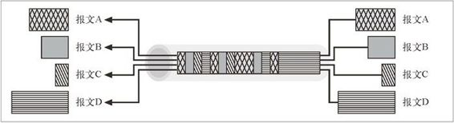

10.8 WebMUX
HTTP-NG 工作组花费了很多精力，为报文传输开发了 WebMUX 标准。WebMUX 是一个复杂的高性能报文系统，通过这个系统，可以在一个复用的 TCP 连接上并行地传输报文。可以对以不同速度产生和消耗的独立报文流进行高效的分组，并将其复用到一条或少数几条 TCP 连接上去（参见图 10-2）。

图 10-2 WebMUX 可以在一条连接上复用多条报文
WebMUX 协议的关键目标包括如下几条。
设计简单。
高性能。
复用——可以在一条连接上动态、高效地交错传递多个（使用任意高层协议的）数据流，不用因为等待那些速度很慢的生产者程序而延迟数据的传输。
基于信用的流量控制——数据是以不同的速率产生和消耗的，发送者和接收者的内存和可用的 CPU 资源都有所不同。WebMUX 使用的是“基于信用的”流量控制方案，接收者可以预先声明期望的数据接收速度，防止出现资源缺乏产生的死锁。
保持对齐——保持复用流中数据的对齐，这样才能有效地发送并处理二进制数据。
丰富的功能——接口足够丰富，能支持套接字 API。
更多有关 WebMUX 协议的内容请参阅 http://www.w3.org/Protocols/MUX/WD-mux-980722.html。